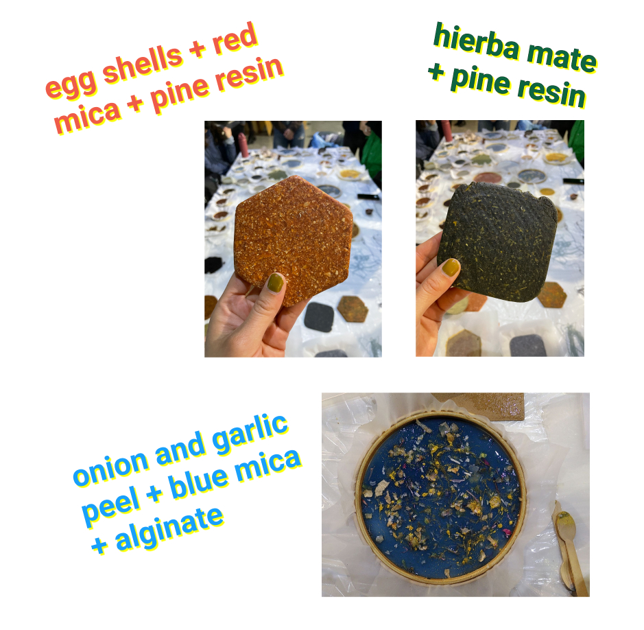
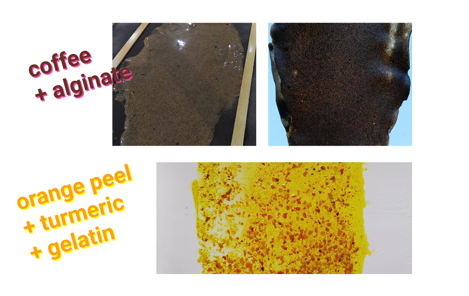
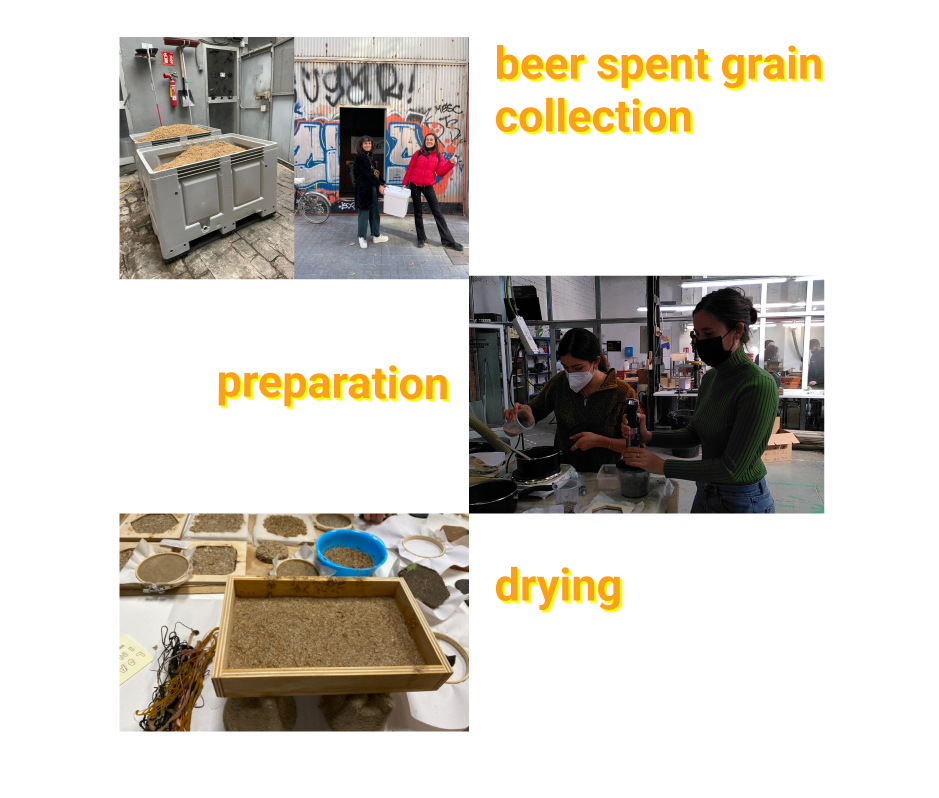

facts, feelings, findings
We had two classes with Lara Campos. She presented us her work, where she explores a lot our interactions with materials on a sensorial and emotional point of view. Lara is also part of S_Biotica (a collective working on R&D, education and industry collaboration) and Remix el Barrio collective.
The first class was an introdution to the topic with a lot of inpiring examples of people or collectives working with biomaterials. And the second class was more hands-on, by groups, we experimented with 3 recipes using different biopolymers (agar, alginate, pine resin) and the waste we had brought. We experimented with different methodologies : flat surfaces, molds and extrusion.
Lara encouraged us to start engaging with stakeholders to gather the ‘waste’. I went to the coffee shop down my place and they were very happy to collaborate as they usually just throw away the coffee waste. They gave me a huge bag and said that I could come twice a week if I needed more.
However, I realized in class that I could not use it directly as it was still too wet and needed to be dried before making materials to avoid molding during the drying process. The different ways to dry/dehydrate materials are: in the sun if there is enough, or using the oven, open and a a very low temperature. I am not very in favour of the latest option which would consume a lot of energy. Another option would be to make or buy a dehydrator which we didn’t have a that moment. Julia is actually in the process of building one.

I didn’t know a lot about biomaterials before this week and I really appreciated the time we had for explorations with materials in reduced teams so everyone could really experiment. In general, I found the recipes were easy to follow with accessible ingredients and I could imagine myself trying a lot of different ones to find a good material, this is a process I quite enjoy.
future
There is so much potential to create materials with all the waste that surrounds us. Even if I knew food waste had a value, I mostly considered it in the angle of soil and compost. All the possibilities of creating materials out of it is completely new to my practice. I really appreciate the overall objective of this seminars to no think as material as something designers would just pick out of a catalog.
Despite that, below are some of the challenges I see to make the use of biomaterials more widespread.
words The word waste should be replaced by another to change the narrartive and make it appear as a resource. What would be appropriate?
question every material/ingredients Starting questionning the materials opens to even more questions. If I use pine resin as a biopolymer, how do I make sure it has been extracted respectfully? If we use mica powder to color biomaterials, how do we know it has not been collected in bad conditions (cf recent articles about child labour collecting mica)?

